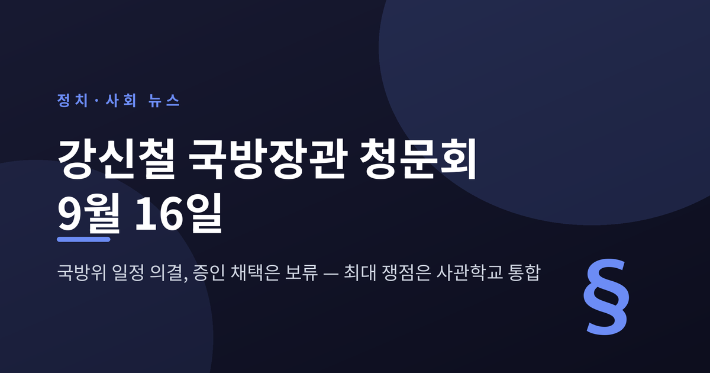
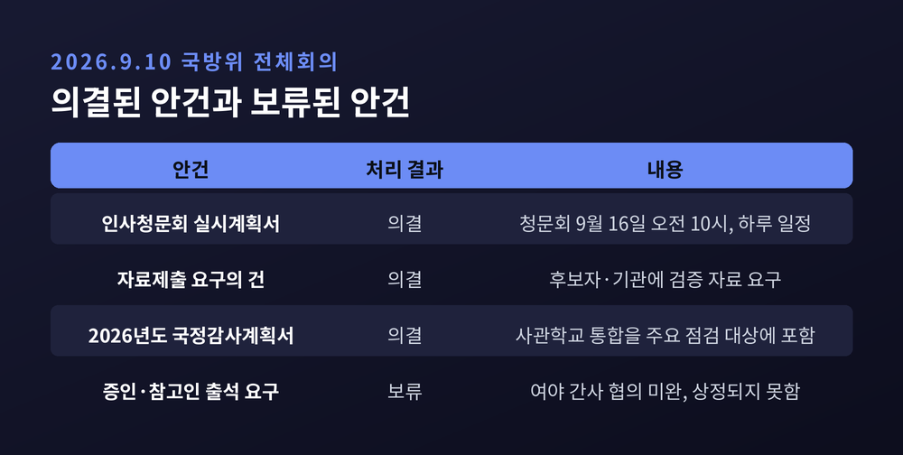
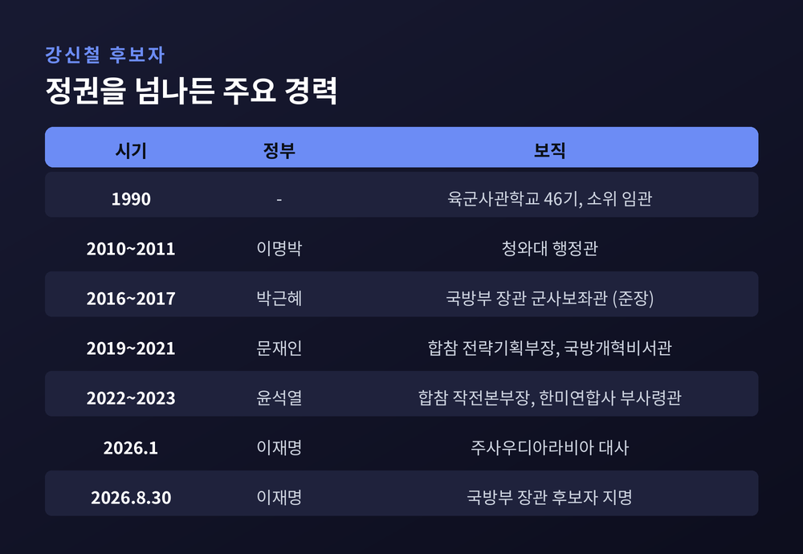
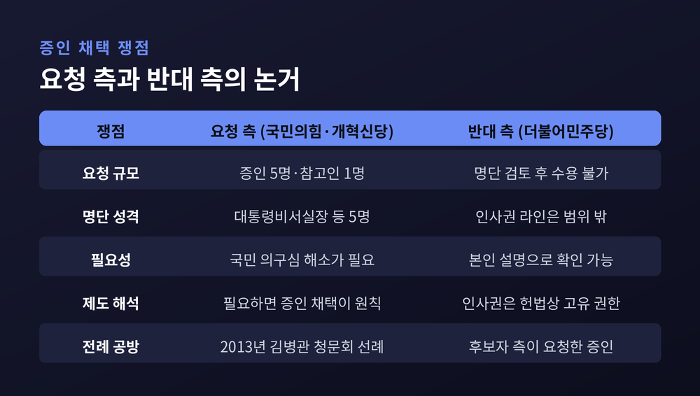
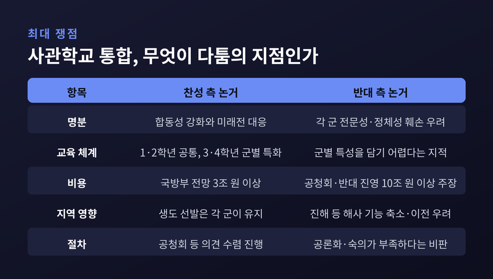
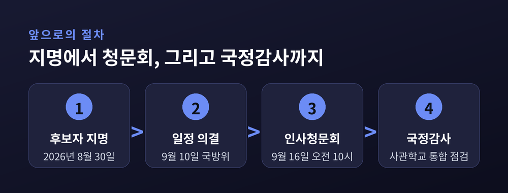

이번 글에서는 9월 10일 국회 국방위원회가 의결한 강신철 국방부 장관 후보자 인사청문회 일정과, 그 자리에서 드러난 쟁점 구조를 정리해 보겠습니다. 청문회 날짜는 정해졌지만 증인 채택은 미뤄졌습니다. 그리고 청문회의 무게중심은 후보자 개인이 아니라 '사관학교 통합'이라는 정책 쪽으로 옮겨가 있습니다.
먼저 세 줄로 요약하면 이렇습니다.
국회 국방위원회는 2026년 9월 10일 오전 국회에서 전체회의를 열었습니다. 회의를 주재한 사람은 더불어민주당 소속 진성준 국방위원장입니다.
이날 처리된 안건은 세 가지입니다. 강신철 후보자에 대한 인사청문회 실시계획서 채택의 건, 인사청문회 자료제출 요구의 건, 그리고 2026년도 국정감사계획서 채택의 건입니다. 세 건 모두 여야 합의로 의결됐습니다.
실시계획서가 통과되면서 청문회 일정이 확정됐습니다. 9월 16일 오전 10시, 하루 일정입니다. 아시아투데이·뉴데일리·경남도민일보·서울경제가 모두 같은 일시를 전했습니다.
다만 한 건이 남았습니다. 증인·참고인 출석 요구의 건입니다. 여야 간사 사이의 협의가 끝나지 않아 안건 상정 자체가 이뤄지지 못했습니다. 진성준 위원장은 "여야 간사가 한 번 더 협의해 달라"며 "합의가 되면 합의되는 대로 처리하겠다"고 했습니다. 아직 문이 닫힌 것은 아닌 셈입니다.

장관 인사청문회는 흔한 절차입니다. 그런데도 이번 건이 눈길을 끄는 이유는 두 가지입니다.
첫째, 국방부 장관은 국회 동의가 필수인 자리가 아닙니다. 국무총리나 대법원장처럼 본회의 임명동의 표결을 거쳐야 하는 직위와 달리, 국무위원은 청문 절차를 마치면 대통령이 임명할 수 있습니다. 그래서 청문회는 '통과 여부'를 가르는 관문이라기보다 후보자의 입장을 공개적으로 기록에 남기는 자리에 가깝습니다.
둘째, 바로 그 점 때문에 이번 청문회의 성격이 달라졌습니다. 국방위는 후보자의 답변을 국회 속기록에 명확히 남겨 향후 정책 검증의 기준으로 삼겠다는 방침을 밝혔습니다. 취임 후 청문회 답변과 다른 결정을 내리면 그 이유와 책임을 묻겠다는 취지입니다. 한 국방위 관계자는 "정책 청문회가 검증 강도가 낮은 청문회를 뜻하는 것은 아니다"라고 말했습니다.
예전의 장관 청문회가 신상과 도덕성 공방으로 소비되는 경우가 많았다면, 이번에는 정책 문답의 기록 가치가 앞에 놓인 모양새입니다.
강신철 후보자는 1968년 서울에서 태어났습니다. 육군사관학교 46기로 1990년 소위로 임관했고, 예비역 육군 대장입니다. 올해 나이는 58세입니다.
경력을 시간순으로 보면 정권 교체와 무관하게 요직을 거쳤다는 점이 드러납니다.
아주경제는 문재인 정부에서 중장으로 진급한 장성 가운데 윤석열 정부에서 대장까지 오른 인사는 강 후보자가 유일했다고 전했습니다. 청와대와 합참, 한미연합사, 그리고 외교 현장을 두루 거친 이력입니다.

가장 먼저 부딪힌 지점은 증인 명단이었습니다.
국민의힘과 개혁신당은 증인 5명과 참고인 1명을 요청했습니다. 명단에는 강훈식 대통령비서실장, 청와대 민정수석실 소속 이태형 공직기강비서관, 인사수석실 소속 김용채 인사비서관이 포함된 것으로 보도됐습니다. 나머지 증인과 참고인의 신원은 공개되지 않았습니다.
야당 간사인 임종득 국민의힘 의원은 후보자를 둘러싼 '철거민 청약' 의혹과 인사 검증 과정의 문제를 짚으며 "증인과 참고인을 불러 국민의 의구심을 털어내야 한다"고 했습니다. 그러지 않으면 "통과의례로 하겠다는 것밖에 되지 않는다"는 주장입니다.
여당 간사인 김병주 더불어민주당 의원은 반대 입장을 밝혔습니다. "후보자의 청문회도 거치지 않은 상태에서 인사 실패를 전제로 부르는 걸로 보인다"며, 청문회장이 "정치 공세의 장으로 변질될 수 있다"고 했습니다. 주택 문제에 대해서는 후보자 본인의 설명을 들으면 확인할 수 있는 사안이라고 덧붙였습니다.
같은 당 황명선 의원은 제도의 성격을 근거로 들었습니다. 청와대 인사 검증 라인을 증인으로 부른 전례가 없고, 대통령의 인사권은 헌법상 고유 권한이며, 인사권 행사 자체를 증인 심문 대상으로 삼는 것은 후보자의 자질과 직무 수행 능력을 검증한다는 인사청문회의 법적 목적과 맞지 않는다는 논리입니다.
전례를 두고도 공방이 오갔습니다. 국민의힘은 2013년 3월 김병관 국방부 장관 후보자 청문회에서 증인을 채택한 사례를 들었습니다. 당시 후보자가 고문으로 일했던 유비엠텍의 홍성익 사장이 증인으로 출석한 바 있습니다. 이에 김병주 의원은 그 증인이 야당 요구가 아니라 후보자 측이 요청한 증인이었다고 맞받았습니다.
정리하면 다툼의 지점은 '의혹 해소의 필요성'과 '인사권·청문 제도의 범위' 사이에 있습니다. 어느 쪽 주장이 옳은지는 이 글에서 판단하지 않겠습니다. 다만 두 논거가 서로 다른 차원을 겨냥하고 있다는 점은 기록해 둘 만합니다.

청문회의 무게중심은 사관학교 통합입니다. 여야 모두 이 사안을 최대 관건으로 꼽는다는 점에서는 이견이 없습니다. 국방위는 같은 날 의결한 국정감사계획서에도 사관학교 통합을 주요 점검 대상으로 넣었습니다.
정부안의 골자는 이렇습니다. 육·해·공군사관학교를 통합해 가칭 국군사관학교를 만드는 구상으로, 이재명 대통령의 대선 공약이자 국정과제입니다. 명분은 합동성 강화와 미래 전장 대응입니다.
국방부가 2026년 7월 내놓은 기본계획에 따르면 교육 체계는 '2+2 네트워크형 통합 모델'입니다. 1·2학년은 리더십과 군사학, 합동작전 개념 등 공통 기초과정을 함께 이수하고, 3·4학년은 육군 태릉, 해군 창원, 공군 청주에서 군별 전문교육을 받는 방식입니다. 생도 선발은 통합하지 않고 각 군이 기존처럼 따로 뽑는 방향으로 정리됐습니다.
일정은 보도마다 조금씩 다릅니다. 2028년 서울 노원구 태릉 육사 부지에서 먼저 출범한 뒤 2032년 대전 자운대로 이전한다는 2단계 방안이 유력하다는 보도가 있고, 2028년쯤 자운대에 창설한다는 서술도 있습니다. 확정된 최종 일정으로 단정하기는 이릅니다.
찬성 측 논거는 다음과 같습니다.
반대 측 논거는 이렇습니다.
논의 방식 자체를 향한 지적도 있습니다. 한국일보는 8월 26일 국방부 공청회에 안규백 장관이 불참한 점과, 반대를 주도한 총동창회 측이 발족한 연대체에 극우 성향 단체들이 다수 포함된 점을 함께 짚었습니다. 엄효식 한국국방안보포럼 방산안보실장은 "양쪽 다 일방적인 주장만 반복하는 상황"이라며 국민이 통합의 득실을 따져보기 어렵다고 했습니다.
정치권의 공방은 청문회 직전까지 이어졌습니다. 국민의힘 장동혁 대표는 9월 7일 공군사관학교, 9월 11일 해군사관학교를 잇달아 찾아 통합 반대 뜻을 밝혔습니다. 장 대표는 생도 91.3%가 통합에 반대한다는 수치를 인용했는데, 조사 주체와 방법은 보도에서 특정되지 않았습니다.

강 후보자는 사관학교 통합에 대해 명확한 찬반을 밝힌 적이 없습니다.
9월 3일 서울 용산구 국방컨벤션에 마련된 청문회 준비 사무실로 첫 출근하면서 기자들과 만나 "다양한 의견과 우려가 있는 것을 안다"고 했습니다. 이어 "과거 사관학교가 어떤 모습이든, 어디에 있든 대한민국의 사관학교였다"며 "미래의 사관학교도 그 누구의 것도 아닌 바로 대한민국의 사관학교일 것"이라고 말했습니다. 통합 방침 철회 가능성을 묻는 질문에는 직접 답하지 않았습니다.
전작권 전환에 대해서는 "한미동맹이 강화되는 방향으로 추진하겠다"는 입장을 밝혔습니다. 정부와 여당은 올가을 한미안보협의회에서 미래연합사령부 완전운용능력 검증을 마치고 전환 목표연도를 건의할 계획입니다. 한미연합사 부사령관을 지낸 후보자가 어떤 청사진을 내놓을지가 관심사입니다.
이 밖에 방첩사령부 문제, 원자력추진잠수함 사업, 그리고 안규백 장관이 추진해 온 경계 체계 개편도 검증 대상에 올라 있습니다. 안 장관은 현재 약 2만2000명 수준인 GOP 경계병력을 인공지능 기반 과학화 경계체계와 연계해 2040년까지 6000명 수준으로 줄이는 구상을 제시한 바 있습니다. 국방부는 민통선을 군사분계선 이남 평균 8km에서 6km로 줄이는 방안도 추진하고 있습니다.
신상 측면에서는 '철거민 특별분양' 의혹이 제기돼 있습니다. 후보자가 2008년 서울 구로구 천왕동 주택으로 전입한 뒤 해당 주택이 보상 매입되면서 철거민 자격을 얻었고, 2012년 서초구 아파트를 특별분양 받았다는 내용입니다. 천하람 개혁신당 의원은 후보자 일가 여러 명이 관련돼 있다고 주장했습니다.
후보자 측 인사청문회 준비팀은 이를 정면 반박했습니다. "군 본연의 업무에 집중하느라 개인적인 일에 소홀했던 것은 후보자의 불찰이나, 위장전입의 고의나 청약 과정의 불법성은 전혀 없었다"는 설명입니다. 주민등록을 뒀던 군인아파트는 임시 복무지였고 천왕동 주택이 유일한 생활 근거지였으며, 공무에 따른 주민등록 불일치는 토지보상법 시행령상 예외 사유에 해당한다는 입장입니다.
양측 주장이 정면으로 맞서 있고, 아직 사실로 확정된 것은 없습니다. 이 글에서도 의혹이 제기됐다는 사실과 반박이 있다는 사실만 함께 적습니다.
언론의 전망도 갈립니다. 아주경제는 국방위 의원들이 후보자의 군내 평판을 대체로 긍정적으로 평가하고 있다며 '정책 청문회'가 될 것으로 내다봤습니다. 반면 헤럴드경제는 이 논란이 취임 이후까지 부담으로 남을 수 있다고 봤습니다.
인사청문회법은 청문 절차에 시한을 둡니다. 소관 위원회는 안건이 회부된 날부터 15일 이내에 청문회를 마쳐야 하고, 국회 전체 처리 기한은 제출일로부터 20일 이내입니다. 청문회 자체는 3일 이내로 진행합니다. 이번 건은 하루 일정으로 잡혔습니다.
청문회가 끝나면 국방위는 심사경과보고서를 채택하게 됩니다. 다만 국무위원은 국회 동의가 필수가 아니어서, 보고서 채택 여부와 무관하게 대통령이 임명할 수 있는 구조입니다.
남은 변수는 세 가지로 정리됩니다.

정리하면 이렇습니다.
9월 16일 오전 10시라는 날짜와 시각은 정해졌습니다. 하지만 그 자리에 누가 앉을지는 아직 정해지지 않았고, 무엇을 물을지는 이미 정해져 있습니다. 증인석은 비어 있을 수 있어도 질문지에는 '사관학교 통합'이 굵게 적혀 있는 셈입니다.
이 사안을 두고 어느 쪽이 옳다고 말하기는 이릅니다. 통합 찬성 논거에도 반대 논거에도 각각의 근거가 있고, 비용 추계는 세 배 넘게 벌어져 있으며, 후보자 본인의 입장은 아직 공백입니다. 저 역시 이 글에서 답을 내놓지는 않았습니다.
"장교 양성은 국가 안보의 백년대계다."
전문가들이 충분한 공론화와 숙의를 주문하며 되풀이해 온 말입니다. 백년대계라면 판단도 그만큼 오래 들여다본 뒤에 내려야 할 것입니다. 9월 16일의 몇 시간이 그 긴 논의의 끝이 아니라 시작이 되기를, 독자 여러분과 함께 지켜보고 싶습니다.
이 글은 2026년 9월 11일 기준 공개된 언론 보도를 바탕으로 정리했습니다. 주요 출처는 아시아투데이·뉴데일리·서울경제·경남도민일보·아주경제·한국일보·뉴스핌·헤럴드경제 등입니다. 확인되지 않은 의혹은 사실로 단정하지 않았으며, 여야 양측의 입장을 함께 실었습니다.